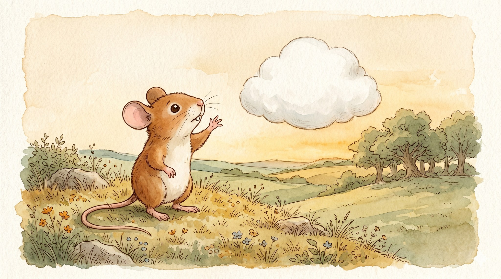
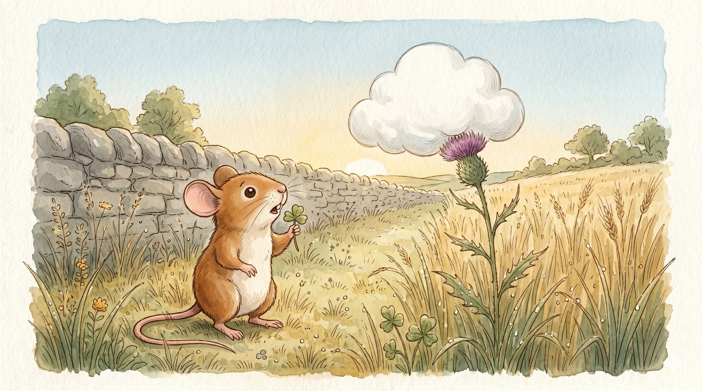
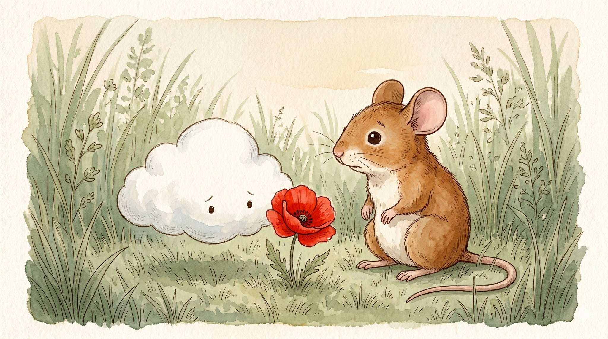
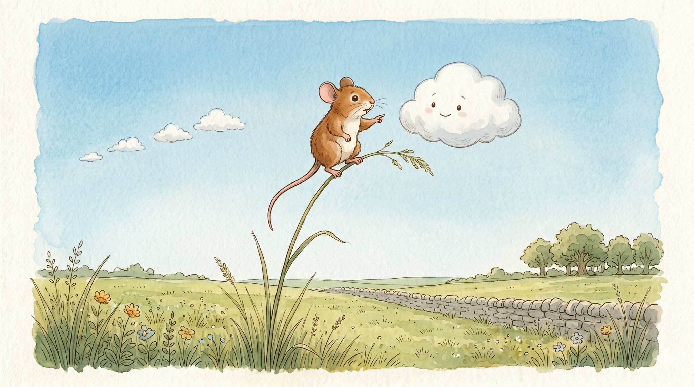
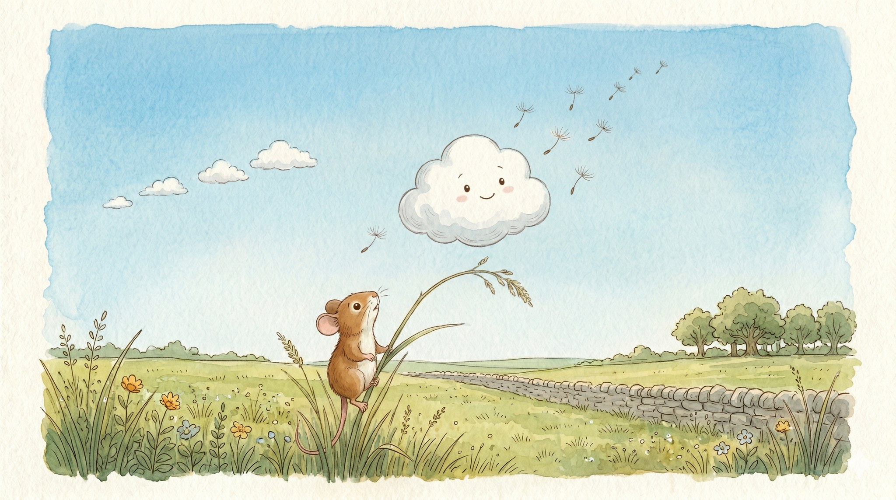
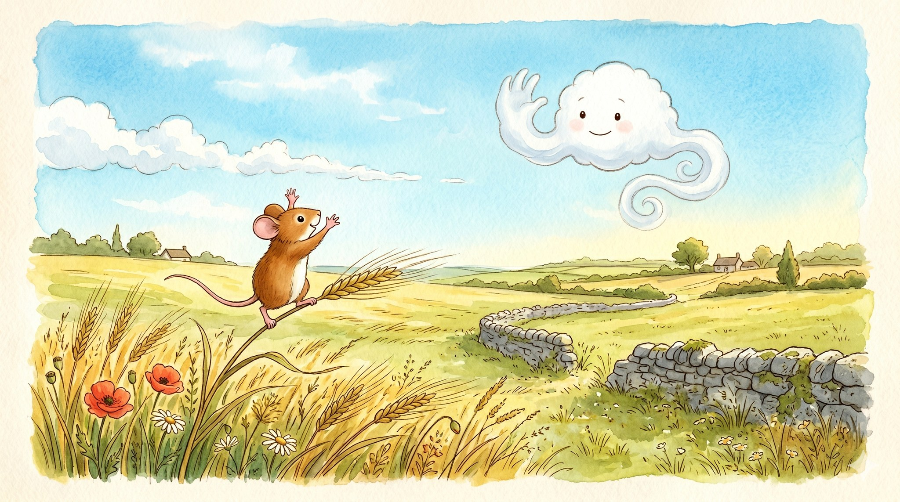

Pip and the Lost Cloud

A story for ages 4–7 about how helping someone get home is the kindest kind of work

Pip was a small field mouse who lived between a barley field and an old stone wall.
One quiet morning, Pip was nibbling a fine piece of clover when a tiny voice floated by.
“I am lost,” it said. “I do not know how to get home.”
Pip looked up. There, just above the tallest grasses, hung a small white cloud, bumping gently into a thistle, the way a balloon bumps into a ceiling. Bump. Bump.

“Excuse me,” said Pip. “Are you a cloud?”
“Yes,” sniffed the cloud. It drooped low beside one bright red poppy. “I came down to look at this poppy. It was so red. I had never seen anything so red. But now I can’t find my way back to the sky.”
“Every time I try, I go sideways. Or down. Never up. I just want to go home.”
Pip sat up on his hind legs and listened, ears forward.

Then Pip had an idea.
Pip climbed, carefully, carefully, to the top of the tallest stalk of grass in the whole field. It bent a little under his tiny weight.
High above, far away, a slow line of other clouds drifted across the big blue sky.
Pip pointed with one small paw.
“There,” said Pip. “There is your family. They’re going that way.”
The cloud looked. And looked. And then — it saw them.

The cloud took a slow, soft breath.
And very gently, it began to lift. Just a little at first, like dandelion fluff catching the wind.
Then a little more.
Then up, and up, and up — past the grass, past the wall, all the way into the bright blue morning.
Far below, small on his tall stalk of grass, Pip watched it rise.

High in the sky, the little cloud had almost reached its family. It waved a soft white wave, one small curl, just for Pip.
Pip stood on top of the tall grass and waved back, both paws high above his head.
“Goodbye, little cloud!” Pip called. “Welcome home!”
The cloud slipped into the line, and together they all drifted away over the barley.
Pip climbed back down to his clover. It was, Pip thought, a very good morning.